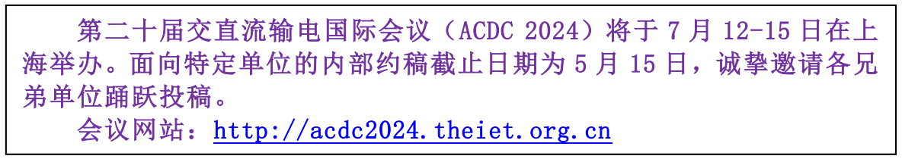

学院通知 · 科研创新
【征文通知】第二十届交直流输电国际会议（ACDC 2024）
发布时间：2024-04-27
一、会议简介 IET交直流输电国际会议是电力系统领域久负盛名的国际性输电会议，ACDC2024由IET、清华大学主办，怀柔实验室、中国电气装备集团联合主办。围绕构建新型电力系统的基础元器件、关键装备、重大交直流输电工程、交直流融合多场景应用等议题，以大会主旨报告、分会场专题报告、论文口头交流、论文张贴交流、技术参观等形式，对交直流输电领域的前沿课题、产业动态和技术发展趋势展开讨论。 二、征文范围（包括但不限于） DCTechnology ·Planning,modelling anddesigningofDCtransmission and distributiongrid ·Control,protectionandmeasuringforDCtransmissionanddistribution grid ·Advanced DC grid equipment, including converter, transformer, circuit breaker,DCSST,subsea andunderground cables ·VSCMVDC,HVDC andUHVDC technology andrecent projects ·LCCHVDC andVSC-LCC HybridHVDC technology andrecentprojects ·New High Voltage Converter Technology and DC Transmission TechnologyACGridTechnology ·Planning, modelling,designing,operation and maintenance of AC transmissionanddistributionsystem ·Electromagnetic transient, electromagnetic environment, lightning protection,groundingofACtransmission anddistributionsystem ·UHV AC technology and recent projectsNew Technology ·PowersemiconductorsanditsapplicationforAC/DCgrid ·Newmaterialsforpowertransmissionanddistribution ·AC/DCgridforcleanenergyandenergystorage,includingoffshorewindfarm,solar powerplant ·NewenergyDCcollectionandaccesstechnology ·Hydrogenproductiontechnologyofnew energyvia AC/DCpowergrid ·DCtransportation(electricvehicles,railtransportation,ships) ·DCbuildingsandDCdatacenters ·Othernoveltechnologyofpowertransmissionanddistribution 三、参会获益 1.被大会录用并参加会议交流的论文将以会议论文集的形式由IET负责出版，收录于IET电子图书馆（IETDigitallibrary）、IEEEXplore及Inspec数据库，并提交EI检索。 2.会议将评选出一定比例的优秀论文，在颁奖典礼上由IET颁发优秀论文证书，并推荐至《IETGeneration,Transmission&Distribution》、 《HighVoltage》等SCI期刊发表。 3.学生投稿被会议录用之后，将享受低折扣注册费优惠。 四、投稿要求 1.会议稿件需为全英文稿件。 2.论文模板及投稿系统请见会议网站 http://acdc2024.theiet.org.cn 五、往期回顾 点击此处，查看“ ACDC 2018 ”详情内容。 点击此处，查看“ ACDC 2020 ”详情内容。 点击此处，查看“ ACDC 2022 ”详情内容。 六、联系方式 韩雪姣， xuejiao-han@tsinghua.edu.cn ，13811188645 主办单位 联合主办 承办单位 清华大学电机工程与应用电子技术系怀柔实验室新型电力系统中心 许继电气股份有限公司 内蒙古电力（集团）有限责任公司 新型电力系统运行与控制全国重点实验室清华大学能源互联网创新研究院 清华四川能源互联网研究院 中国电机工程学会直流输电与电力电子专业委员会中国电机工程学会高电压专业委员会
